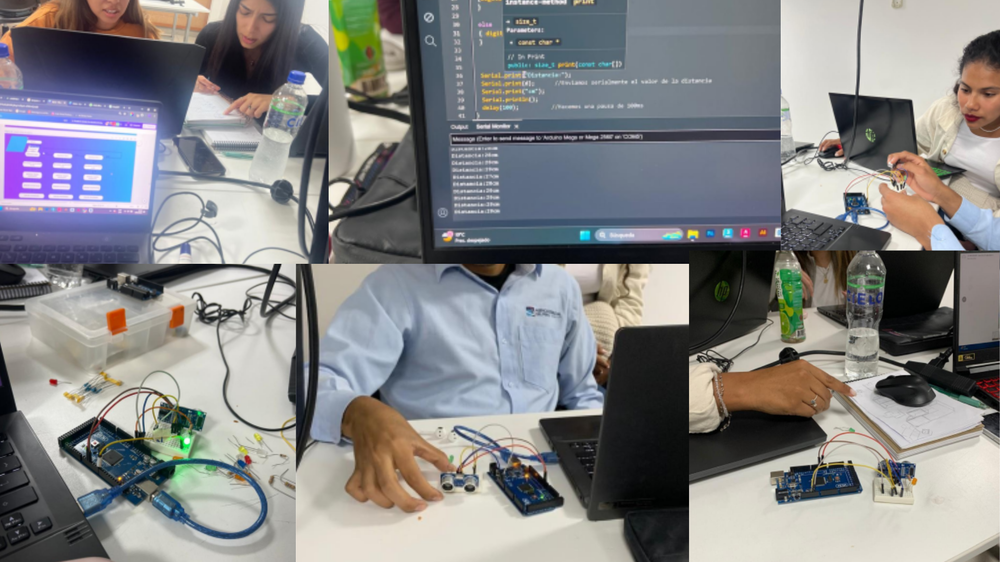

Programación IDE
En la sesión 9 de nuestra clase de laboratorio, nos enfocamos en aprender a programar utilizando el IDE de Arduino y aplicar esos conocimientos en un ejercicio práctico. El objetivo del día era comprender cómo programar un sensor ultrasónico y hacer que interactuara con otros componentes a través del Arduino Uno. La clase comenzó con una explicación detallada del profesor sobre el entorno de desarrollo integrado (IDE) de Arduino, sus características y cómo escribir y cargar código en el microcontrolador. Con el conocimiento teórico en mente, cada grupo recibió un kit que incluía un Arduino Uno, un sensor ultrasónico, una protoboard, resistencias y cables de conexión. El profesor nos guió paso a paso en la configuración del hardware, mostrando cómo conectar el sensor ultrasónico a la protoboard y luego al Arduino. Una vez que todo estuvo conectado, pasamos al IDE de Arduino para escribir el código que permitiría al sensor medir distancias y enviar esa información al Arduino. Con la ayuda del profesor, logramos programar el dispositivo para que detectara objetos cercanos y mostrara las distancias en el monitor serial. Esta sesión no solo reforzó nuestros conocimientos de programación y electrónica, sino que también destacó la importancia de la orientación y el apoyo del profesor en el proceso de aprendizaje.